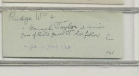
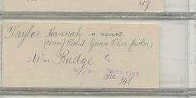

Here's a photograph of a card from an index to grooms referring to William Rudge and Hannah nee Taylor's marriage. It reads "Rudge, Wm. & Hannah Taylor s. minor (cons. of Richard Grove T. her father) his St. George Boro 1799".

Here's a photograph of a card from an index to brides referring to William Rudge and Hannah nee Taylor's marriage. It reads "Taylor, Hannah s. minor (cons. of Richard Grove T. her father) & Wm. Rudge St. George Boro 1799."